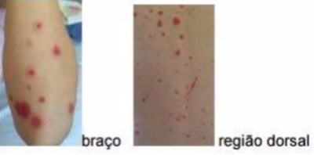

Questão 1 · Diagnóstico · Pediatria · 4000182097Menina de 10 anos apresenta dor e edema em tornozelos e lesões cutâneas, principalmente em membros inferiores e nádegas, há 5 dias (foto), sem nenhuma outra queixa. O restante do exame físico está sem alteração. Há 20 dias, apresentou quadro de infecção respiratória. Exames complementares: Hb: 14 g/dL, GB: 7.200/mm³ (40% neutró los, 60% linfócitos), plaquetas: 480.000/mm³, VHS 40 mm/1 hora, proteína C reativa 3 mg/dl (VR: abaixo de 0,5 mg/dl(, urina rotina sem alterações. Ultrassonogra a de abdome normal. Além de observar a evolução do quadro, qual a conduta terapêutica nesse momento?

A Analgésico.
B Corticoide.
C Dapsona.
D Tacrolimus.
Questão 2 · Pediatria · Púrpura · 4000181630Você está atendendo um paciente com quadro de púrpura palpável, dor abdominal e artralgia. Sua suspeita inicial é de Púrpura de Henoch-Schönlein. Sobre esse diagnóstico, assinale a alternativa correta.
A A púrpura palpável é um achado frequente nos pacientes acometidos, mas não obrigatório.
B Manifestações gastrointestinais são bastante incomuns e, quando presentes, são leves e autolimitadas.
C A doença não acomete os rins.
D A artrite aguda é um critério obrigatório para o diagnóstico, geralmente incapacitante, aditiva e de pequenas articulações.
E Pode ser primária ou desencadeada por infecções virais, bacterianas, alimentos, vacinas, medicamentos e picadas de insetos.
Questão 3 · Púrpura de HenochSchöinleinVasculite por IgA · Pediatria · 4000169070Pré-escolar, sexo masculino, 4 anos, foi levado por sua mãe a uma Unidade de Pronto Atendimento com história de lesões avermelhadas em pernas, dores em joelhos e dor abdominal que piorava às refeições. Exame físico: lesões purpúricas em membros inferiores, artrite em tornozelos. O hemograma estava normal e o exame de urina apresentava hematúria discreta. Dentre as seguintes alterações patológicas vasculares, a que mais provavelmente está presente neste paciente é:
A inflamação granulomatosa com células gigantes e aneurismas.
B depósitos mistos de células, eosinófilos e imunoglobulina A.
C inflamação eosinofílica da microcirculação pulmonar.
D granuloma necrotizante extravascular.
E necrose fibrinoide com microaneurismas em vários estágios de evolução.
Questão 4 · Púrpura de HenochSchöinleinVasculite por IgA · 4000171535Escolar sexo masculino, 7 anos de idade, com história de tosse seca e coriza iniciado há 20 dias, sem febre, evoluindo com melhora progressiva. Há 15 dias iniciou dor articular nos joelhos associado a edema, vermelhidão e di culdade de movimentação, com migração da dor e edema para tornozelos há 10 dias. Há 7 dias apareceu lesões predominante em membros inferiores e nádegas, cor vermelho arroxeada, elevada, que não desaparece a dígito pressão, nega prurido. Nega febre. Pressão arterial: 90/60 mm/Hg (percentil 50 para idade). Exames laboratoriais: hemograma com hemoglobina de 10 mg/dl (VR: 11-14), leucócitos 18.000 mm3 (VR: 7.000-15.000), sem desvio. Plaquetas 350.000 (VR: 140.000-400.000). Urina 1: com presença de hematúria, leucocitúria, proteína presente. VHS: 15 mm (VR: até 20 mm). PCR: 20 mg/dl (VR: menor 1,0 mg/dl). Qual diagnóstico mais provável?
A Púrpura trombocitopenica idiopática.
B Síndrome de Behçet.
C Artrite idiopática infantil.
D Vasculite por lgA.
Questão 5 · Púrpura de HenochSchöinleinVasculite por IgA · Pediatria · 4000145260Garoto de 7 anos é recebido na unidade de saúde e apresenta o seguinte quadro: dor de barriga difusa com presença de sangramento nas fezes; Púrpuras elevadas, não relacionadas a redução das plaquetas. O exame histológico evidencia granulócitos em paredes de arteríolas ou vênulas. Considerando tal quadro, o provável diagnóstico é:
A Anemia falciforme.
B Esofagite.
C Doença de Crohn.
D Púrpura de Henoch-Schõnlein.
Questão 6 · Púrpura de HenochSchöinleinVasculite por IgA · Pediatria · 4000142701Menino, 9 anos, com história de febre e dor de garganta, por 5 dias, é tratado ambulatorialmente com penicilina benzatina. No dia seguinte, desenvolveu uma erupção cutânea eritematosa e não pruriginosa que evoluiu dos pés até as coxas e as extremidades superiores, incluindo palmas e solas dos pés. Posteriormente, os pés caram inchados e dolorosos; quadro que se agravava com a deambulação. Exame físico: eritema faríngeo; petéquias no palato mole; linfadenopatia cervical; erupção purpúrica nodular e indolor envolvendo as extremidades superior e inferior com edema duro sem acometimento do tronco. Dois dias depois, o menino apresentou dor abdominal em cólica envolvendo o quadrante superior direito e esquerdo, agravada pelas refeições e associada à hematêmese e fezes aquosas. Exames laboratoriais: leucocitose = 16.900/mm3 ; hemoglobina = 14g/dL; hematócrito = 41,2%; uréia = 16mg/dL; creatinina = 0,9mg/dL. Exame de urina: > 5 hemácias/campo; VHS = 58mm/hora; PCR = 5,6mg/dL. A hipótese diagnóstica mais provável é:
A vasculite por IgA
B meningococemia
C mononucleose
D dengue
Questão 7 · Pediatria · Complicações · 4000139076Uma menina de 3 anos de idade foi encaminhada ao pronto-socorro de um hospital por apresentar, subitamente, dor abdominal e manchas avermelhadas em membros inferiores. As manchas progrediram rapidamente, acompanhadas por inchaço e dor, impedindo-a de caminhar. A mãe referiu resfriado comum havia cerca de duas semanas. No exame físico, o médico observou que a criança estava em bom estado geral, afebril, com indicadores antropométricos no escore Z= 0, micropoliadenopatia cervical, abdome indolor à palpação, sem visceromegalias, com lesões purpúricas em membros inferiores, edema bilateral em pés e tornozelos e dor à movimentação passiva e ativa. Os exames complementares de diagnóstico mostraram: hematócrito: 40%; hemoglobina: 13 g%; leucometria 13.000/mm3 com diferencial normal; plaquetas: 400.000/mm3; uréia: 20 mg/dL; creatinina: 0,3 mg/dL; glicemia: 85 mg/dL; BT: 1 mg/dL; BD: 0,4 mg/dL; TGO: 30 mg/dL; TGP: 10 mg/dL; PT: 7,5 g/dL; albumina: 4,5g/dL; EAS: pH 6; 10 piócitos/campo, 15 hemácias/campo. Considerando o caso clínico hipotético precedente, julgue o item. O envolvimento do sistema nervoso central ocorre em menos de 10% de casos como a da paciente em questão.
A Certo.
B Errado.
Questão 8 · Púrpura de HenochSchöinleinVasculite por IgA · Pediatria · 4000139075Uma menina de 3 anos de idade foi encaminhada ao pronto-socorro de um hospital por apresentar, subitamente, dor abdominal e manchas avermelhadas em membros inferiores. As manchas progrediram rapidamente, acompanhadas por inchaço e dor, impedindo-a de caminhar. A mãe referiu resfriado comum havia cerca de duas semanas. No exame físico, o médico observou que a criança estava em bom estado geral, afebril, com indicadores antropométricos no escore Z= 0, micropoliadenopatia cervical, abdome indolor à palpação, sem visceromegalias, com lesões purpúricas em membros inferiores, edema bilateral em pés e tornozelos e dor à movimentação passiva e ativa. Os exames complementares de diagnóstico mostraram: hematócrito: 40%; hemoglobina: 13 g%; leucometria 13.000/mm3 com diferencial normal; plaquetas: 400.000/mm3; uréia: 20 mg/dL; creatinina: 0,3 mg/dL; glicemia: 85 mg/dL; BT: 1 mg/dL; BD: 0,4 mg/dL; TGO: 30 mg/dL; TGP: 10 mg/dL; PT: 7,5 g/dL; albumina: 4,5g/dL; EAS: pH 6; 10 piócitos/campo, 15 hemácias/campo. Considerando o caso clínico hipotético precedente, julgue o item. É indicada que se faça uma biópsia renal na paciente para a pesquisa de depósitos mesangiais de imunocomplexos.
A Certo.
B Errado.
Questão 9 · Pediatria · Complicações · 4000139074Uma menina de 3 anos de idade foi encaminhada ao pronto-socorro de um hospital por apresentar, subitamente, dor abdominal e manchas avermelhadas em membros inferiores. As manchas progrediram rapidamente, acompanhadas por inchaço e dor, impedindo-a de caminhar. A mãe referiu resfriado comum havia cerca de duas semanas. No exame físico, o médico observou que a criança estava em bom estado geral, afebril, com indicadores antropométricos no escore Z= 0, micropoliadenopatia cervical, abdome indolor à palpação, sem visceromegalias, com lesões purpúricas em membros inferiores, edema bilateral em pés e tornozelos e dor à movimentação passiva e ativa. Os exames complementares de diagnóstico mostraram: hematócrito: 40%; hemoglobina: 13 g%; leucometria 13.000/mm3 com diferencial normal; plaquetas: 400.000/mm3; uréia: 20 mg/dL; creatinina: 0,3 mg/dL; glicemia: 85 mg/dL; BT: 1 mg/dL; BD: 0,4 mg/dL; TGO: 30 mg/dL; TGP: 10 mg/dL; PT: 7,5 g/dL; albumina: 4,5g/dL; EAS: pH 6; 10 piócitos/campo, 15 hemácias/campo. Considerando o caso clínico hipotético precedente, julgue o item. Comprometimento renal grave, a curto prazo, é infrequente em casos como esse.
A Certo.
B Errado.
Questão 10 · Púrpura de HenochSchöinleinVasculite por IgA · Pediatria · 4000139073Uma menina de 3 anos de idade foi encaminhada ao pronto-socorro de um hospital por apresentar, subitamente, dor abdominal e manchas avermelhadas em membros inferiores. As manchas progrediram rapidamente, acompanhadas por inchaço e dor, impedindo-a de caminhar. A mãe referiu resfriado comum havia cerca de duas semanas. No exame físico, o médico observou que a criança estava em bom estado geral, afebril, com indicadores antropométricos no escore Z= 0, micropoliadenopatia cervical, abdome indolor à palpação, sem visceromegalias, com lesões purpúricas em membros inferiores, edema bilateral em pés e tornozelos e dor à movimentação passiva e ativa. Os exames complementares de diagnóstico mostraram: hematócrito: 40%; hemoglobina: 13 g%; leucometria 13.000/mm3 com diferencial normal; plaquetas: 400.000/mm3; uréia: 20 mg/dL; creatinina: 0,3 mg/dL; glicemia: 85 mg/dL; BT: 1 mg/dL; BD: 0,4 mg/dL; TGO: 30 mg/dL; TGP: 10 mg/dL; PT: 7,5 g/dL; albumina: 4,5g/dL; EAS: pH 6; 10 piócitos/campo, 15 hemácias/campo. Considerando o caso clínico hipotético precedente, julgue o item. São diagnósticos diferenciais nesse caso: púrpura trombocitopênica idiopática, leucemia linfoblástica aguda, doença de Kawasaki.
A Certo.
B Errado.
Questão 11 · Tratamento · Pediatria · 4000139072Uma menina de 3 anos de idade foi encaminhada ao pronto-socorro de um hospital por apresentar, subitamente, dor abdominal e manchas avermelhadas em membros inferiores. As manchas progrediram rapidamente, acompanhadas por inchaço e dor, impedindo-a de caminhar. A mãe referiu resfriado comum havia cerca de duas semanas. No exame físico, o médico observou que a criança estava em bom estado geral, afebril, com indicadores antropométricos no escore Z= 0, micropoliadenopatia cervical, abdome indolor à palpação, sem visceromegalias, com lesões purpúricas em membros inferiores, edema bilateral em pés e tornozelos e dor à movimentação passiva e ativa. Os exames complementares de diagnóstico mostraram: hematócrito: 40%; hemoglobina: 13 g%; leucometria 13.000/mm3 com diferencial normal; plaquetas: 400.000/mm3; uréia: 20 mg/dL; creatinina: 0,3 mg/dL; glicemia: 85 mg/dL; BT: 1 mg/dL; BD: 0,4 mg/dL; TGO: 30 mg/dL; TGP: 10 mg/dL; PT: 7,5 g/dL; albumina: 4,5g/dL; EAS: pH 6; 10 piócitos/campo, 15 hemácias/campo. Considerando o caso clínico hipotético precedente, julgue o item. O tratamento indicado para a criança deve ser somente de suporte, com hidratação e nutrição, e anti-inflamatórios não esteroides, para aliviar a artrite, não estando indicada, nesse caso, desnecessária a administração de corticosteroides.
A Certo.
B Errado.
Questão 12 · Diagnóstico · Púrpura de HenochSchöinleinVasculite por IgA · Pediatria · 4000138288Criança de 7 anos, sexo feminino, branca. Vem ao ambulatório com queixa de manchas em pele de início há 10 dias. Nega uso de qualquer medicação. Sem comorbidades. Sem antecedentes de doenças prévias. História de avó com artrite reumatóide. Ao exame apresenta-se com sinais vitais normais e desenvolvimento pondero-estatural no percentil 50%. Bom estado geral, com lesões vermelhas, elevadas, indolores, não pruriginosas que não desaparecem à digitopressão com predomínio em nádegas, pernas e coxas. Adenomegalias cervical e inguinal de 0,5 – 1 cm de diâmetro, indolores, fibroelásticas. Exame neurológico normal. O diagnóstico mais provável é:
A Púrpura trombocitopênica idiopática.
B Meningococcemia.
C Púrpura de Henoch-Schönlein.
D Artrite idiopática juvenil.
E Lupus eritematoso sistêmico juvenil.
Questão 13 · Púrpura de HenochSchöinleinVasculite por IgA · Pediatria · 4000137504Menino, 9 anos, com história de febre e dor de garganta, por 5 dias, é tratado ambulatorialmente com penicilina benzatina. No dia seguinte, desenvolveu uma erupção cutânea eritematosa e não pruriginosa que evoluiu dos pés até as coxas e as extremidades superiores, incluindo palmas e solas dos pés. Posteriormente, os pés caram inchados e dolorosos; quadro que se agravava com a deambulação. Exame físico: eritema faríngeo; petéquias no palato mole; linfadenopatia cervical; erupção purpúrica nodular e indolor envolvendo as extremidades superior e inferior com edema duro sem acometimento do tronco. Dois dias depois, o menino apresentou dor abdominal em cólica envolvendo o quadrante superior direito e esquerdo, agravada pelas refeições e associada à hematêmese e fezes aquosas. Exames laboratoriais: leucocitose = 16.900/mm3; hemoglobina = 14g/dL; hematócrito = 41,2%; uréia = 16mg/dL; creatinina = 0,9mg/dL. Exame de urina: > 5 hemácias/campo; VHS = 58mm/hora; PCR = 5,6mg/dL. A hipótese diagnóstica mais provável é:
A vasculite por IgA.
B meningococemia.
C mononucleose.
D dengue.
Questão 14 · Púrpura de HenochSchöinleinVasculite por IgA · 4000120135Criança de 6 anos dá entrada no pronto socorro pediátrico com quadro de púrpura palpável, artralgia em membros inferiores, dor abdominal, vômitos e hematúria. A principal hipótese diagnóstica é:
A Púrpura trombocitopênica trombótica.
B Púrpura de Henoch-Schönlein.
C Doença de von Willebrand.
D Doença de Kawasaki.
E Meningite meningocócica.
Questão 15 · Quadro clínico · 4000111362Menino de 7 anos atendido no pronto socorro de pediatria recebe o diagnóstico de púrpura de Henock-Schönlein. Qual dos dados citados a seguir não é observado na púrpura de Henock-Schönlein?
A Púrpura nos membros inferiores e nádegas.
B Plaquetopenia.
C Dor abdominal.
D Artralgia.
E Hematúria.
Questão 16 · Diagnóstico · Púrpura de HenochSchöinleinVasculite por IgA · 4000106128Vasculite por IgA ou púrpura de HenochSchönlein PHS Homem de 20 anos apresenta quadro de poliartrite, dor abdominal aguda, púrpuras palpáveis nas pernas e hematúria micros- cópica. Hemograma, coagulograma, creatinina e complemento sérico são normais. O diagnóstico mais provável é
A doença de Goodpasture.
B granulomatose de Wegener.
C síndrome de Reiter.
D lúpus eritematoso sistêmico.
E vasculite por IgA.
Questão 17 · Exames laboratoriais · 4000100530Menino, 08 anos, é atendido na UPA com queixa de dor abdominal e um exantema purpúrico palpável em nádegas e panturrilhas. Passado recente de infecção viral de vias aéreas superiores. Espera-se encontrar no exame complementar:
A Coagulograma normal.
B Trombocitopenia.
C Hipocomplementemia C3.
D Hiper IgE.
Questão 18 · Quadro clínico · 4000068284L.F.G., 5 anos, apresenta dor abdominal em cólicas há 5 dias. Ao exame clínico apresenta-se em regular estado geral, com abdome ácido, dor abdominal difusa à palpação, sem sinais de localização e sem visceromegalias. Há 1 dia, iniciou com quadro de petéquias e sufusões hemorrágicas na região de nádegas e membros inferiores. O hemograma mostrou hematócrito 36%, Hb: 12g/dL, leucócitps: 9.000/mm³ (bastões=0, segmentados=67%, eosinó los=3%, linfócitos=20%, monócitos=10%, plaquetas= 210.00/mm3. A hipótese diagnóstica mais provável é:
A Leucemia linfoblástica aguda
B Meningococcema
C Purpúra trombocitopênica idiopática
D Púrpura de Henoch – Schonlein
E Eczema hemorrágico
Questão 19 · Quadro clínico · 4000020350Criança de cinco anos, sexo masculino, apresenta dor abdominal, artralgia, hematúria e lesões avermelhadas que não somem a dígito pressão em membros inferiores e nádegas. Hemograma normal com 250.000 plaquetas. Qual o diagnóstico?
A púrpura trombocitopênica idiopática.
B púrpura trombocitopênica trombótica.
C púrpura de Henoch-Schönlein.
D meningococcemia.
E sarampo.
Questão 20 · Tratamento · Complicações · 4000125622Fernando, 3 anos, é trazido ao PS. A mãe relata que há cerca de 3 semanas, após “gripe”, a criança iniciou quadro de dor abdominal importante, dor e inchaço de joelhos e punhos e surgimento de lesões purpúricas, palpáveis, indolores disseminadas pelo corpo, principalmente em membros inferiores. Hemograma: Hb: 10 g/dL; Ht: 30; Leuco: 8500; Plaquetas: 180.000. Assinale a alternativa CORRETA.
A A hidroxizina está indicado para o tratamento das lesões de pele.
B A principal complicação envolve sangramento em mucosa respiratória.
C Para o tratamento, a imunoglobulina humana está indicada neste momento.
D Envolvimento renal acontece em até metade dos pacientes com este diagnóstico.
E Nenhuma das anteriores está correta.
Questão 21 · Púrpura de HenochSchöinleinVasculite por IgA · 4000118214Menina de 5 anos, procura o pronto-socorro devido a dor e edema de tornozelos associados a manchas elevadas, vermelhas que não desaparecem a digito pressão, indolores e não pruriginosas há dois dias. As lesões cutâneas iniciaram-se em nádegas e já estavam acometendo coxas e pernas. Criança refere leve dor abdominal. O diagnóstico mais provável é:
A Doença de Kawasaki.
B Poliarterite Nodosa.
C Púrpura Trombocitopênica Idiopática.
D Púrpura de Henoch-Schönlein.
E Arterite de Takayasu.
Questão 22 · Púrpura de HenochSchöinleinVasculite por IgA · 4000115999Menino, 5 anos de idade, procura Pronto-Socorro com história de aparecimento, há 9 dias, de manchas avermelhadas em membros inferiores, acompanhadas de dor abdominal difusa nos últiimos 2 dias. Referindo também urina avermelhada durante 3 dias. Nega prurido ou febre. Há 3 dias apresentou resfriado comum de rápida resolução. Ao exame físico: presença de lesões petequiais simétricas em relevo, palpáveis, distribuídas em pernas, coxas e nádegas. Sem sinais de irritação peritoneal e sem visceromegalias. O diagnóstico é:
A Coagulação Intravascular Disseminada
B Glomerulonefrite aguda
C Síndrome hemolítica-urêmica
D Vasculite por Lúpus Eritematoso Sistêmico
E Púrpura de Henoch-Schonlein
Questão 23 · Complicações · 4000115832Mariana, 5 anos de idade, apresenta dor abdominal em cólicas há 4 dias. No exame clínico apresenta-se em regular estado geral, discreta palidez cutânea, abdômen ácido e com dor difusa à palpação abdominal, sem sinais de localização. Baço e fígado não palpáveis. Há 1 dia iniciou quadro de petéquias e sufusões hemorrágicas na região das nádegas e membros inferiores. Apresenta também dores articulares. Hemograma com hematócrito de 36%, Hemoglobina de 12 g/dl, leucócitos 9.000/mm3 (B=0; S= 67%; E=3%, L= 20%; M=10%) Plaquetas= 210.000/mm³. Na situação acima, a complicação tardia que pode ocorrer no quadro clínico apresentado por Mariana envolve, principalmente, qual órgão ou sistema?
A Renal.
B Cardíaco.
C Articular.
D Gastrointestinal.
Questão 24 · Púrpura de HenochSchöinleinVasculite por IgA · 4000115823Mariana, 5 anos de idade, apresenta dor abdominal em cólicas há 4 dias. No exame clínico apresenta-se em regular estado geral, discreta palidez cutânea, abdômen ácido e com dor difusa à palpação abdominal, sem sinais de localização. Baço e fígado não palpáveis. Há 1 dia iniciou quadro de petéquias e sufusões hemorrágicas na região das nádegas e membros inferiores. Apresenta também dores articulares. Hemograma com hematócrito de 36%, Hemoglobina de 12 g/dl, leucócitos 9.000/mm3 (B=0; S= 67%; E=3%, L= 20%; M=10%) Plaquetas= 210.000/mm³. A hipótese diagnóstica mais provável é:
A Leucemia linfoblástica aguda.
B Meningoccemia.
C Púrpura trombocitopênica idiopática.
D Púrpura de Henoch-Schönlein.
Questão 25 · Complicações · 4000115357Pré-escolar chega à Unidade de Emergência Pediátrica com queixa de aparecimento de manchas avermelhadas, em relevo, palpáveis, em pernas e glúteos, há 1 semana. Acompanhante (tia) refere que, no último mês, após um quadro respiratório agudo, a criança vem se queixando de dores articulares, com edema de tornozelos e joelhos. Relata, ainda, cólicas abdominais nesse período, tendo evacuado com sangue e muco por duas vezes. Em relação ao seguimento em longo prazo, assinale a alternativa CORRETA que representa uma das complicações associadas à doença descrita.
A Doença hematológica
B Insuficiência hepática
C Insuficiência renal
D Doença coronária
E Insuficiência respiratória
Questão 26 · Púrpura de HenochSchöinleinVasculite por IgA · 4000113625Pré-escolar de dois anos, sexo feminino, apresenta há duas semanas quadro de poliartrite migratória de grandes articulações e manchas na pele. A história patológica pregressa sugere infecção de vias aéreas de provável etiologia viral precedendo o início do quadro em 15 dias e situação sócio-econômica precária Ex. físico: palidez, manchas violáceas em MMII, dor intensa a mobilização dos joelhos, hepatoesplenomegalia. O hemograma: Hb. 10 g/dl; leuco: 5000(2/35/1/52/10), plaq.80.000/mm³. O diagnóstico mais provável é:
A Febre reumática
B Púrpura de Henoch-Schönlein
C Leucemia
D LES
E Artrite reumatóide.
Questão 27 · Diagnóstico · 4000113519APS, 05 anos, sexo masculino, branco. Procura atendimento médico com história de aparecimento de manchas arroxeadas nas pernas, algumas de tamanho pequeno, outras maiores, há cerca de sete dias. Hoje notou novas manchas nas nádegas. Desde o início do quadro vem se queixando de dor abdominal tipo cólica, de caráter intermitente. Há 01 dia notou inchaço no joelho esquerdo e hematúria. A criança continua brincando em casa. Nega febre ou sangramento aparente. Recentemente apresentou dor de garganta, mas não procurou médico na ocasião. O exame físico evidenciava pele com lesões tipo púrpuras palpáveis em ambos os membros inferiores, chegando a altura da região glútea. Joelho direito com aumento de volume discreto, com calor, rubor, dor à digito pressão, à movimentação ativa e passiva. Qual a principal hipótese disgnóstica?
A Leucose
B Púrpura de Henoch-Schölen
C Lúpus eritematoso sistêmico
D Hemofilia
Questão 28 · Quadro clínico · 4000068198A púrpura de Henoch-Schonlein, atualmente conhecida como vasculite por IgA, é a vasculite mais comum na infância. Dentre as alternativas a seguir, assinale a alternativa CORRETA.
A Aproximadamente 10% dos casos ocorrem em crianças pré-escolares e escolares.
B É incomum a história de infecção respiratória prévia.
C A doença renal crônica geralmente ocorre em 50% dos pacientes pediátricos.
D O envolvimento do trato gastrointestinal pode ocorrer em até 5% das crianças.
E O rash típico é purpúrico e acomete classicamente as nádegas e membros inferiores (gravidade-dependente).
Questão 29 · Diagnóstico · 4000062648Menina de 6 anos de idade apresenta há 24 horas manchas em membros inferiores, que segundo a mãe, não apresentou febre. Nega ingesta de medicamentos. Nega prurido. Ao exame físico apresenta púrpura palpável em membros inferiores. Realizado hemograma completo, sendo esse sem anormalidades. Qual o diagnóstico provável:
A Púrpura trombocitopênica idiopática.
B Púrpura de Henoch-Schonlein.
C Púrpura de Schamberg.
D Ptiríase rósea purpúrica.
Questão 30 · Quadro clínico · 4000059903Em relação à púrpura de Henoch Schonlein em crianças, assinale alternativa correta.
A Púrpura palpável é critério obrigatório para diagnóstico, para o qual deve-se ter também três dos seguintes critérios: dor abdominal, artrite ou artralgia, envolvimento renal ou biópsia com vasculite leucocitoclástica.
B Orquite, epididimite e torção de testículo podem fazer parte das apresentações extrarrenais da doença.
C Invaginação intestinal pode ocorrer em até 5% dos casos, sendo a ileocecal a topografia mais comum.
D O hemograma pode evidenciar anemia, sendo que a contagem de plaquetas geralmente é normal, embora possa ocorrer plaquetopenia em até 5% dos casos.
E Os corticosteroides devem ser usados no tratamento de artrite e do envolvimento gastrointestinal, sendo os anti- inflamatórios não hormonais reservados para os casos com envolvimento renal.
Questão 31 · Diagnóstico · 4000057843Lucas 5 anos, apresenta dor abdominal em cólicas há 5 dias. No exame clínico apresenta-se em regular estado geral, abdômen ácido, dor abdominal difusa à palpação, sem sinais de localização, baço e fígado não palpáveis; há 1 dia iniciou quadro de petéquias e sufusões hemorrágicas na região das nádegas e membros inferiores. Hemograma com hematócrito de 36%, Hemoglobina de 12 g/dl, leucócitos 9.000/ mm3 (B=0; S=67%; E=3%, L=20%; M=10%) Plaquetas= 210.000/ mm3. A hipótese diagnóstica mais provável é:
A Leucemia linfoblástica aguda.
B Meningococemia.
C Púrpura trombocitopênica idioática.
D Púrpura de Henoch-Schönlein.
Questão 32 · Quadro clínico · 4000030391A hipótese diagnóstica para uma criança de 5 anos, apresentando artralgia/artrite, dor abdominal, hematúria e lesões cutâneas purpúricas, é
A Púrpura de Henoch Shonlein.
B Glomerulonefrite difusa aguda.
C Síndrome de Alport.
D Nefrite lúpica.
E Síndrome nefrótica.
Questão 33 · Quadro clínico · 4000016263Criança de 5 anos, previamente hígida, é levada a um pronto atendimento por apresentar, há 5 dias, quadro abdominal, edema e dor no tornozelo direito, associados à presença de lesões purpúricas em membros inferiores e nádegas. Hemograma realizado mostrou discreta leucocitose com contagem de plaquetas e hemoglobina normais. Assinale a alternativa que apresenta a PRINCIPAL hipótese diagnóstica para essa criança:
A Púrpura de Henoch-Schölein.
B Lúpus eritematoso sistêmico.
C Púrpura trombocitopênica autoimune.
D Leucemia linfocítica aguda.
Questão 34 · Púrpura de HenochSchöinleinVasculite por IgA · 4000099483Um menino de 7 anos de idade há uma semana com quadro de IVAS e apresenta-se com dor abdominal, urina escura e di culdade para andar devido à dor nos joelhos. Ao exame apresentava pápulas eritematosas sobrelevadas em membros inferiores. O diagnóstico deve corresponder à:
A Púrpura. Trompocitopênica Idiopática.
B Síndrome Hemolítico-urêmica.
C Púrpura Henoch-Schonlein.
D Septicernia por Meningococo.
Questão 35 · Quadro clínico · 4000073134Francisca, 4 anos, apresenta-se com quadro de dor abdominal em cólicas há 5 dias. No exame clínico, apresenta-se em regular estado geral, abdome ácido, dor abdominal difusa à palpação, sem sinais de localização, baço e fígado não palpáveis. Há 1 dia iniciou quadro de petéquias e sufusões hemorrágicas na região das nádegas, estendendo-se pelos membros inferiores. Hemograma com hematócrito de 36%, Hemoglobina de 12 g/dL, leucócitos 9.000/mm³ (B=0; S= 67%; E=3%; L= 20%; M=10%); Plaquetas= 210.000/mm³. A hipótese diagnóstica mais provável é
A meningococcemia.
B leucemia linfoblástica aguda.
C púrpura de Henoch-Schönlein.
D púrpura trombocitopênica idiopática.
Questão 36 · Púrpura de HenochSchöinleinVasculite por IgA · Pediatria · 4000050780Escolar de sete anos apresentou há duas semanas um quadro de coriza, tosse e febre, de involução espontânea. Há três dias iniciou com manchas avermelhadas pelo corpo, predominantemente em membros inferiores, acompanhadas de artralgia e febre baixa, sem prurido. Ao exame lesões cutâneas purpúricas, maculopapulosas eritematosas, petéquias e equimoses predominantemente em membros inferiores, nádegas, dorsos dos pés e palmas das mãos. Apresentava, também, dor à manipulação, edema sem ogose em tornozelos e mãos e di culdade de deambulação. Sobre esta doença podemos afirmar que
A é mais grave na criança do que no adulto.
B a evolução para doença renal terminal é comum.
C o uso de corticóides melhora a evolução da lesão renal.
D pode ocorrer também após picada de inseto e vacinação.
E as lesões purpúricas devem estar presentes desde o início do quadro para o diagnóstico.
Questão 37 · Quadro clínico · 4000010383Considerando este caso, qual a principal hipótese diagnóstica? Criança de 4 anos de idade apresentando equimoses e petéquias em membros inferiores, nádegas e tronco há cerca de 3 dias, em bom estado geral e com dor em tornozelos bilateralmente. Nega tanto história de sangramento previamente quanto história familiar para sangramento. Realizado hemograma, observou-se: Hb 11.3 g/dl; leucócitos: 12.000/mm³ (segmentados 40%; eosinó los 3%; linfócitos 50%; monócitos 7%) e plaquetas: 400.000/mm³.
A Trombocitopenia primária imune.
B Meningococcemia.
C Doença de Kawasaki.
D Púrpura de Henoch-Schönlein.
E Leucemia.
Questão 38 · Púrpura de HenochSchöinleinVasculite por IgA · 4000008754Menino de 4 anos apresentando lesões purpúricas em membros inferiores há dois dias. Qual o achado laboratorial e a complicação aguda mais frequente?
A Plaquetopenia e sepse.
B Alteração no mielograma e infiltração metastática.
C Coagulograma alterado e epistaxe/gengivorragia.
D Fator antinuclear positivo e glomerulonefrite.
E Número de plaquetas normal e vasculite intestinal.
Questão 39 · Diagnóstico · 4000126362Otávio, 8 anos, foi atendido na UPA do Promorar. QP/HDA: Dor abdominal associado a lesões de pele. A mãe a rma que a criança “estava gripada recentemente”. Exame físico: rash purpúrico e palpável em nádegas e panturrilhas. Sem outros achados dignos de nota. O que se espera nos exames complementares?
A AST e ALT bastante elevadas.
B Plaquetopenia.
C Aumento na IgE.
D C3 baixo.
E Coagulograma normal.
Questão 40 · Tratamento · Quadro clínico · 4000119365Em relação a púrpura de Henoch-Schonlein assinale a alternativa correta:
A Não há indicação de corticoterapia nos casos leves, mesmo na ocorrência de hematúria
B Pulso de corticosteroides deve ser utilizado na fase inicial, na presença de manifestações cutâneas ulceradas ou necrosantes.
C Os imunossupressores: azatioprina e metotrexate estão indicados no tratamento da glomerulonefrite progressiva que ocorre na doença grave.
D As manifestações do trato digestório nunca precedem as manifestações cutâneas e articulares.
E A artrite não deve ser tratada com anti-inflamatórios não hormonais, exemplo ibuprofeno, naproxeno pelo risco de lesão renal.
Questão 41 · Tratamento · 4000098237Menino de 4 anos de idade, previamente hígido, procura serviço de emergência para avaliação de dor abdominal difusa e múltiplas lesões purpúricas em coxas. Refere história pregressa de febre e infecção de vias aéreas superiores com duração de cerca de quatro dias. Exame físico: bom estado geral, afebril, alerta; erupções purpúricas palpáveis em coxas e nádegas, simétricas; presença de edema, dor e eritema em tornozelo direito e articulações das mãos; abdome plano, ácido, doloroso à palpação super cial e profunda de região periumbilical, com descompressão brusca negativa. Exames laboratoriais: hemoglobina = 11,8 g/dl (11 a 14,5); leucócitos = 14.000 células/mm³ (4.000 a 12.000) e plaquetas = 260.000/mm³ (150.000 a 450.000). Qual é a conduta mais adequada para o caso?
A Uso de antibiótico parenteral devido ao diagnóstico presuntivo de meningococcemia,até que se obtenham os resultados das hemoculturas.
B Uso de imunoglobulina intravenosa devido ao diagnóstico presuntivo de púrpuratrombocitopênica idiopática.
C Observação e uso de corticosteroide se necessário são as condutas para essa criança que apresenta como principal hipótese diagnóstica púrpura de Henoch-Schölein.
D Uso de imunoglobulina intravenosa por se tratar muito provavelmente de doença deKawasaki.
Questão 42 · Púrpura de HenochSchöinleinVasculite por IgA · 4000090713L.M.P., 4 anos de idade apresentando erupções purpúricas e petequeais com início em tornozelos e cotovelos, chegando a porção posterior da coxa e nádegas, evoluindo para o restante do corpo 4 dias após o aparecimento. Refere dor abdominal e alteração da coloração da urina segundo a mãe. Na história pregressa apresentou quadro respiratório a princípio viral, cerca de 2 semanas atrás com resolução espontânea. Apresenta hemograma e plaquetas normais, com teste de coagulação normal, exame comum de urina evidenciando hematúria, creatinina normal. Após esses dados, o pediatra solicitou antiestreptolisina O e IgA ambos elevados. Qual o diagnóstico do paciente?
A Púrpura trombocitopênica idiopática;
B Glomerulonefrite pós-estreptocócica;
C Hiperesplenismo;
D Púrpura de Henoch-Schönlein;
E NDA.
Questão 43 · Púrpura de HenochSchöinleinVasculite por IgA · 4000090633Paciente com 5 anos de idade apresentando petéquias e equimoses em membros inferiores (principalmente em regiões extensoras) sem aparecimento em outras partes do corpo, refere dor abdominal, sem dor em extremidades ou articulares, afebril, sem vômitos ou outras queixas. Exames realizados: hemograma com hemoglobina 12 g/dL, hematócrito 36%, VCM 88 fL, leucócitos 8500 u/L, bastonetes 1%, segmentados 45, linfócitos 50%, plaquetas 210 000 mm3, tempo de protrombina e tempo de tromboplastina parcial ativada normais . Qual o diagnóstico provável?
A Púrpura trombocitopênica parcial;
B Dengue hemorrágica;
C Púrpura de Henoch-Schönlein;
D Doença de Von Willebrand;
E NDA.
Questão 44 · Púrpura de HenochSchöinleinVasculite por IgA · 4000088252Vera, 5 anos, apresenta manchas avermelhadas, palpáveis, em membros inferiores e região glútea, artrite em tornozelos e dor abdominal há 5 dias. O leucograma mostrou discreta leucocitose e hemossedimentação de 50 mm, A doença mais provável desta criança é:
A Púrpura de Henoch-Schönlein.
B Febre reumática.
C Doença de Kawasaki.
D Poliarterite nodosa cutânea.
E Púrpura trombocitopênica.
Questão 45 · Púrpura de HenochSchöinleinVasculite por IgA · Vasculite por IgA ou púrpura de HenochSchönlein PHS · 4000056184As vasculites são doenças raras na faixa etária pediátrica e podem ser classificadas de acordo com as manifestações cutâneas e sistêmicas. A síndrome vasculítica mais frequente em crianças e adolescentes é a Púrpura de Henoch-Schönlein (PHS). A PHS também pode ser conhecida por:
A Poliangeite microscópica.
B Arterite de Takayasu.
C Púrpura trombocitopênica.
D Púrpura anafilactoide.
E Angeitegranulomatosa.
Questão 46 · Púrpura de HenochSchöinleinVasculite por IgA · 4000034121Criança com 6 anos, sexo masculino, é internado com quadro de dor abdominal, periumbilical e surgimento de lesões purpúricas palpáveis em membros inferiores e nádegas com cinco dias de evolução. Sua mãe relata que dez dias antes do início desse quadro a criança estava gripada. Exame solicitado mostrou: leucócitos de 15.600, 87% segmentados, 12% linfócitos, 1% monócito plaquetas de 264.000, hemoglobina de 13 g/dl, ureia 24 e creatinina 0,4%. Considerando o caso descrito, assinale a alternativa que apresenta o diagnóstico MAIS provável.
A Púrpura tromocitopênica auto imune.
B Leucemia linfocítica aguda.
C Dengue.
D Púrpura de Henoch-Schölein.
Questão 47 · Quadro clínico · 4000031245A emergência pediátrica recebe um escolar de 8 anos queixando-se de dores abdominais difusas, que pioram às refeições. No exame físico, o médico residente observa "lesões palpáveis e avermelhadas" que se manifestam predominantemente nos membros inferiores e na região glútea. Suspeita de "artrite" nos tornozelos. Nos exames laboratoriais encontra leucocitose discreta e VHS de 45 mm (na primeira hora). Marque diagnóstico mais provável.
A Púpura trombocitopênica.
B Doença de Kawasaki.
C Púrpura de Henoch-Schonlein.
D Artrite reumatoide.
E Poliarterite nodosa.
Questão 48 · Púrpura de HenochSchöinleinVasculite por IgA · 4000026356Criança, 6 anos de idade, dá entrada na emergência com queixa de manchas no corpo, que se caracteriza por púrpura palpável, predominando em região glútea e membros inferiores, dor em articulações, edema de mãos e pés, dor abdominal e hematúria. Qual o diagnóstico MAIS PROVÁVEL?
A Doença de Kawasaki.
B Dermatopoliomiosite.
C Artrite idiopática juvenil.
D Lúpus eritematoso sistêmico.
E Púrpura de Henoch-Schölein.
Questão 49 · Púrpura de HenochSchöinleinVasculite por IgA · Vasculite por IgA ou púrpura de HenochSchönlein PHS · 4000025862Paciente 16 anos, com história de sinusites de repetição (mais de 8 episódios), rinite alérgica, faringoamigdalites (a última em abril/16) tratada com amoxicilina/clavulanato. Em julho/16 apresentou otite média complicada com mastoidite, sendo iniciado uso de claritromicina. Ao término do tratamento, não houve melhora, persistência da febre e dos sintomas, com surgimento de artralgia de grandes articulações motivando a internação em outro hospital, quando foi medicada inicialmente com levo oxacina (sem relato de melhora), substituído por ceftriaxona (usou 3 dias e foi liberada com cefuroxime oral por mais 10 dias). Agora é internada HECI com queixas de dor abdominal, surgimento de lesões papulares e violáceas inicialmente em membros e no dorso, progredindo até face, tronco, indolores e que não desaparecem a digitopressão, além da persistência do quadro febril (VER IMAGENS). Diante do exposto é qual é o diagnóstico clínico?

A Trata-se de púrpura de Henoch-Schonlein
B Trata-se de síndrome de Stevens-Jhonson
C Sepse por estreptococos
D Reação Urticarifome por alergia a ceftriaxone
E Há necessidade de biópsia de pele para confirmação diagnóstica
Questão 50 · Púrpura · 4000020475A presença de púrpura palpável ou petéquias, com predomínio em membros inferiores é critério mandatório para diagnóstico de qual patologia?
A Doença de Kawasaki
B Púrpura de Henoch-Schönlein
C Síndrome hemolítico Uremica
D Lupus eritematoso sistêmico
Questão 51 · Diagnóstico · 4000007619Criança de quatro anos de idade, com febre, artralgia e dor abdominal, encontra-se há 5 dias em uso de anti-inflamatório não hormonal. Ao exame físico, notam-se petéquias e lesões purpúricas palpáveis nos membros inferiores. Não apresenta foco infeccioso identi cado e a pressão arterial é normal. Exames laboratoriais: hemograma com contagem de plaquetas normal, creatinina sérica normal e urina com hematúria e proteinúria 3+/4+. Qual é a hipótese diagnóstica para esse caso?
A Nefrite tubulointersticial.
B Púrpura de Henoch-Schönlein.
C Poliangiite microscópica.
D Lúpus eritematoso sistêmico.
E Púrpura trombocitopênica idiopática.
Revisar: possível letra faltando em enunciado
Questão 52 · Complicações · 4000111013Menina de 5 anos apresenta lesões de pele e dor nos tornozelos há 1 dia. Ao exame você encontra lesões purpúricas palpáveis em pernas e nádegas e edema e dor em ambos os tornozelos. A morbidade tardia causada por essa doença está associada ao comprometimento de que órgão ou sistema?
A Renal.
B Gastrointestinal.
C Cutâneo.
D Cardíaco.
Questão 53 · Complicações · 4000097459Menina, 7a, com história de aparecimento de lesões nas pernas e glúteos, pruriginosas e indolores, há 3 dias. Refere dor e inchaço em joelhos e tornozelos e dor abdominal difusa tipo cólica. Hábito intestinal e urinário sem alterações. Antecedente: resfriado há 20 dias. Exame físico: bom estado geral, corada, hidratada; T = 36,7°C; FC = 92 bpm; FR = 14 irpm; abdome: ácido, ruídos hidroaéreos normais; pele: lesões papulares palpáveis que não desaparecem à digitopressão em membros inferiores e glúteos; membros inferiores: artrite de tornozelo direito. Hemograma: sem alterações. Duas complicações frequentes são:
A Doença renal e doença intestinal.
B Uveíte e artrite crônica.
C Doença renal e artrite crônica.
D Uveíte e doença intestinal.
Questão 54 · Quadro clínico · Complicações · 4000092877Adolescente, menino de 10 anos com queixa de dor abdominal difusa e exantema que iniciou há 5 dias. Ao exame nota-se exantema violáceo, em placas, que não desaparecem à digitopressão em panturrilhas e nádegas, com edemas de ambos os tornozelos e joelhos. Exame abdominal inocente. Qual o diagnóstico provável que melhor se correlaciona com o achado laboratorial descrito?
A Trombocitopenia Imune primária e plaquetose.
B Leucemia linfoide aguda e Poliglobulia.
C Púrpura de Henoch-Schönlein e aumento de creatinina.
D Glomerulonefrite pós estreptocócica e níveis baixos de C3.
E Doença de Von Willebrand e fator IX baixo.
Questão 55 · Imunof isiopatologia · 4000076361Jovem, 17 anos, queixa-se de artralgias e apresenta púrpura palpável nas nádegas e membros inferiores. Tem história de infecção respiratória alta há 15 dias e passou o m de semana em uma fazenda. O anticorpo envolvido neste processo é da classe:
A IgM.
B IgG.
C IgE
D IgA
Questão 56 · Imunof isiopatologia · 4000060876A Púrpura de Henoch-Schonlein é a causa mais comum de púrpura não trombocitopênica na infância, a qual ocorre tipicamente após:
A Impetigo por Streptococcus do grupo A.
B Infecção do trato respitarório superior.
C Infecção do trato urinário.
D Gastrenterite aguda viral
E Infecção do trato respiratório inferior.
Questão 57 · Quadro clínico · 4000055008Criança de 4 anos deu entrada no pronto atendimento acompanhada da educadora da creche, relata manchas em membros inferiores. Afebril, orofaringe corada, ausculta pulmonar sem alteração, dor abdominal, manchas em membros inferiores e edema de tornozelos com dor a palpação. Parcial de urina com proteinúria e hematúria, Qual a hipótese diagnóstica:
A Púrpura de Henoch-Schonlein
B Doença de Kawasaki
C Doença de Behçet
D Granulomatose de Wegener
E Meningococcemia
Questão 58 · Quadro clínico · 4000039141APS, 05 anos, sexo masculino, branco. Procura atendimento médico com história de aparecimento de manchas arroxeadas nas pernas, algumas de tamanho pequeno, outras maiores, há cerca de sete dias. Hoje notou novas manchas nas nádegas. Desde o início do quadro vem se queixando de dor abdominal tipo cólica, de caráter intermitente. Há 01 dia notou inchaço no joelho esquerdo e hematúria. A criança continua brincando em casa. Nega febre ou sangramento aparente. Recentemente apresentou dor de garganta, mas não procurou médico na ocasião. O exame físico evidenciava pele com lesões tipo púrpuras palpáveis em ambos os membros inferiores, chegando a altura da região glútea. Joelho direito com aumento de volume discreto, com calor rubor, dor à digito pressão, à movimentação ativa e passiva. Qual a principal hipótese diagnóstica?
A Leucose.
B Púrpura de Henoch-Schõlen.
C Lúpus eritematoso sistêmico.
D Hemofilia.
Questão 59 · Quadro clínico · 4000024784Chega para avaliação uma criança de seis anos com história de dor em joelhos e tornozelos há cerca de uma semana, associada a manchas avermelhadas nos braços e nas pernas. Ao exame, são evidenciadas lesões maculopapulares avermelhadas que não desaparecem à digitopressão. As plaquetas estão normais ao hemograma. O médico faz o diagnóstico de púrpura de Henoch-Schönlein. Na doença diagnosticada:
A O comprometimento articular de pequenas articulações ocorre em cerca de 60-80% dos casos.
B O comprometimento da função hepática está presente em cerca de 50% dos casos.
C A presença de manifestação renal, em geral, é um indicador de pior prognóstico.
D A biópsia da lesão demonstra infiltrado de eosinófilos.
Questão 60 · Quadro clínico · 4000015287Um menino de 6 anos, com quadro prévio de infecção respiratória viral há 20 dias, tem artralgia migratória em grandes articulações, exantema maculopapular- petequial, principalmente nos membros inferiores e nas nádegas, e dor abdominal periumbilical tipo cólica, há 5 dias. Exame cardiovascular, radiogra a de tórax e eletrocardiograma normais. Hemograma com leucocitose e desvio a esquerda, plaquetas normais, VHS = 50 mm na primeira hora, proteína C reativa sérica positiva, antiestreptolisina sérica normal e swab de orofaringe negativo. Diante desse quadro, indique a alternativa contendo o diagnóstico MAIS provável
A Púrpura de Henoch-Scholein.
B Artrite idiopática juvenil.
C Febre reumática.
D Doença de Kawasaki.
Questão 61 · Quadro clínico · 4000006789Pré-escolar vem ao consultório com história de estar há 1 mês apresentando dores articulares com edema de tornozelo e joelhos, que se iniciaram após quadro respiratório agudo. Queixa-se, também, de cólicas abdominais, tendo evacuado com sangue e muco por duas vezes nesse período. A família notou, desde o início do quadro, pequenas manchas vermelhas com relevo, palpáveis nas pernas e glúteos. Diante de tal quadro, indique a PRINCIPAL hipótese diagnóstica.
A Artrite idiopática juvenil.
B Púrpura anafilactoide.
C Leucemia linfoblástica aguda.
D Síndrome hemolítico urêmica.
Questão 62 · Diagnóstico · 4000118694Menino de 7 anos com dor abdominal e exantema que iniciou há alguns dias. Ao exame, nota-se púrpura palpável em panturrilhas e nádegas com edema de ambos os tornozelos. Exame abdominal inocente. Qual é o achado laboratorial mais provável nesta situação?
A Trombocitopenia
B Anemia microcítica hipocrômica
C Aumento de ureia e creatinina
D Níveis baixos de C3
E Parâmetros de coagulação normais
Questão 63 · Diagnóstico · Púrpura de HenochSchöinleinVasculite por IgA · 4000116307Vasculite por IgA ou púrpura de HenochSchönlein PHS Paciente do sexo masculino,15 anos, com queixa de dor articular em joelhos e punhos, lesões de pele e dor abdominal em cólica há uma semana. Ao exame físico, notam-se máculas hipercrômicas, de coloração violácea, que não desaparecem à pressão digital, localizadas em pernas. Exame articular sem sinais de artrite. Biópsia de lesão de pele revelou vasculite leucocitoclástica com depósito de IgA. Diante desse caso, assinale o diagnóstico MAIS provável.
A Febre reumática.
B Púrpura de Henoch-Schönlein.
C Artrite reumatoide.
D Granulomatose de Wegener.
Questão 64 · Imunof isiopatologia · Quadro clínico · 4000110131Em criança de 5 anos com nefrite da púrpura de Henoch -Schönlein (PHS), o complemento sérico encontra-se:
A Normal.
B Diminuído, até a segunda semana.
C Aumentado.
D Diminuído, até a quarta semana.
E Diminuído, em todo o período de hematúria.
Questão 65 · Diagnóstico · Quadro clínico · 4000108999Menino de 6 anos, atendido na emergência com a seguinte história clínica: apresentou infecção respiratória há 20 dias. Há 3 dias, dor e edema em joelhos, claudicação e manchas vermelhas em pernas. Há 1 dia, dor abdominal periumbilical tipo cólica que vem progressivamente piorando. Exame físico: bom estado geral; exantema petequial com distribuição simétrica em nádegas, coxas e pernas. Dor moderada à palpação do abdome. Edema, dor e limitação de movimentos em joelhos. Pressão arterial e exame cardiovascular normal. Complementos: a contagem de leucócitos é de 10.000/mm³ e o número de plaquetas é de 250.000/mm³. Outros exames: VHS = 50 mm 1ª hora; PCR positiva; urina rotina: 20-30 hemácias por campo. Escolha a alternativa que contém o diagnóstico mais provável e o exame complementar que deve ser feito de imediato nesse caso:
A Febre reumática e ecocardiograma.
B Febre reumática e dosagem de ASLO.
C Púrpura de Henoch-Schönlein e biópsia da lesão de pelo.
D Púrpura de Henoch-Schönlein e ultrassom de abdome.
Questão 66 · Púrpura de HenochSchöinleinVasculite por IgA · 4000104728Criança, 7 anos de idade, procurou atendimento devido a quadro que se iniciou há 2 dias de dor abdominal difusa, de média intensidade, sem fatores de melhora ou piora, associado à artralgia de pequenas e médias articulações, evoluindo hoje com surgimento de púrpuras palpáveis em membros inferiores. Acompanhante refere que criança apresentou há 10 dias quadro de resfriado com melhora espontânea após 3 dias. O provável diagnóstico do paciente é:
A Doença de Kawasaki.
B poliarterite nodosa.
C púrpura de Henoch-Schönlein.
D linfoma.
Questão 67 · Diagnóstico · 4000080093Escolar de 7 anos, masculino, há uma semana com manchas no corpo, claudicação e dor em joelhos, dor abdominal periumbilical, náuseas e vômitos. Ao exame observa-se púrpura palpável principalmente em membros inferiores simétricas e em nádegas, aumento de volume em joelhos. A alteração laboratorial que mais provavelmente encontraríamos neste paciente é:
A plaquetopenia.
B hemocultura positiva.
C hematúria microscópica.
D blastos em sangue periférico.
E aumento da velocidade de hemossedimentação.
Questão 68 · Quadro clínico · 4000044770São critérios diagnósticos da púrpura de Henoch-Schonlein, EXCETO:
A Dor abdominal difusa.
B Artrite ou artralgia aguda migratória
C Hematúria
D Biópsia cutânea com depósito predominante de IgA
E Hiperemia conjuntival não-purulenta
Questão 69 · Púrpura de HenochSchöinleinVasculite por IgA · 4000021690Um menino de 6 anos é admitido na enfermaria pediátrica com quadro de febre baixa e inchaço nos joelhos e tornozelos há 4 dias. Há 1 dia, apresenta dor abdominal em cólica e sangue nas fezes. Os tornozelos e pés estão moderadamente edemaciados e dolorosos. Apresenta ainda lesões purpúricas palpáveis ao redor dos tornozelos e na superfície extensora das pernas. A pressão arterial é normal. O hemograma revela anemia moderada, leucocitose e contagem normal de plaquetas. Também é encontrada hematúria. O principal diagnóstico é:
A Poliarterite nodosa.
B Púrpura de Henoch-Schönlein.
C Meningococcemia.
D Febre reumática.
E Doença de Kawasaki.
Questão 70 · Púrpura de HenochSchöinleinVasculite por IgA · Vasculite por IgA ou púrpura de HenochSchönlein PHS · 4000021309Uma criança tem dor abdominal, artrite, hematúria microscópica e um exantema purpúrico limitado às extremidades inferiores. Qual dos seguintes diagnósticos é o mais provável:
A Meningococcemia.
B Varicela.
C Vasculite de Henoch-Schönlein.
D Glomerulonefrite pós-estreptocócica.
Questão 71 · Púrpura de HenochSchöinleinVasculite por IgA · Pediatria · 4000011115Menina de 9 anos apresenta surgimento de lesões purpúricas principalmente em face extensora dos membros, edema e dor em tornozelos e dor abdominal intensa seguida de vômitos. O primeiro resultado de exame é o hemograma, que se encontra normal. A respeito do caso, assinale a alternativa INCORRETA:
A Trata-se da vasculite mais frequente na infância.
B O quadro pode evoluir para abdome agudo.
C Tem indicação de uso de corticosteróide.
D Para confirmação diagnóstica deve ser realizado mielograma.
E Pode ocorrer acometimento renal.
Questão 72 · Púrpura de HenochSchöinleinVasculite por IgA · 4000099858Mãe traz seu lho, do sexo masculino, de 6 anos de idade, para atendimento na emergência pediátrica, relatando que a criança, previamente sadia, apresentou há algumas semanas, quadro de infecção de vias áereas superiores e que há 3 dias, apresentou febre, mal-estar e artralgia. Há 48 horas, o menino começou a apresentar um exantema máculo-papular que hoje se tornou mais escuro, com lesões violáceas, apenas em região glútea e em membros inferiores. Ao examinar o paciente, você observa que o menor apresenta bom estado geral e as lesões tratam-se de púrpura vascular palpável (vasculite). O hemograma solicitado foi inespecí co, não há anemia, as plaquetas são normais, com VHS pouco aumentado e coagulograma normal. Considerando-se a principal hipótese diagnóstica para o caso acima, marque a opção correta: Respostas: 1 12 23 34 45 56 67
A O sintoma gastrointestinal mais frequentemente associado é a perfuração intestinal.
B Pode ocorrer artrite que mais comumente deixa sequelas.
C É comum ocorrer artrite recidiva da doença, entre seis semanas até dois anos após o inicio.
D Pode haver acometimento renal e a biópsia está sempre indicada.
E O tratamento com corticoides dever ser iniciado precocemente em todos os pacientes que apresentam púrpura papável.
Revisar: possível letra faltando em enunciado